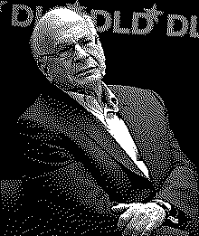

| годы | 1934–2024 |
| кто | израильско-американский психолог; один из основателей поведенческой экономики |
| вклад | эвристики и искажения (с Тверски) · теория перспектив (1979) · Система 1 / Система 2 · неприятие потерь · фрейминг · якорение |
| признание | Нобелевская премия по экономике, 2002 (с Верноном Смитом) |
| книга | «Thinking, Fast and Slow» (2011) |
| связано | Амос Тверски · ошибки по правилам |
тот, кто дал глупости грамматику.
Канеман показал, что ошибки мышления не случайны — у них есть направление, форма и почти всегда причина.
Дэниел Канеман пришёл в психологию из практики: детство в оккупированной Франции, служба в армии Израиля, разработка системы отбора офицеров. Там он впервые увидел, что интуитивные суждения экспертов системно ошибаются — и что эти ошибки повторяются.
Вместе с Амосом Тверски он построил программу «эвристики и искажения»: не каталог частных промахов, а теория того, как интуиция подменяет сложный вопрос простым. Репрезентативность, доступность, якорение — не метафоры, а механизмы с предсказуемым выходом.
Теория перспектив (1979) сломала классическую картину рационального агента: человек оценивает не итоговое состояние, а изменение от точки отсчёта; потери весят примерно вдвое больше равных выигрышей. За это — Нобель по экономике в 2002-м. Тверски к тому моменту уже не было.
В «Thinking, Fast and Slow» Канеман собрал полвека в рамку двух систем — быстрой и медленной — и честно признал: знание об искажениях почти не делает его к ним устойчивее. Лечит не сила воли, а устройство среды вокруг решения.